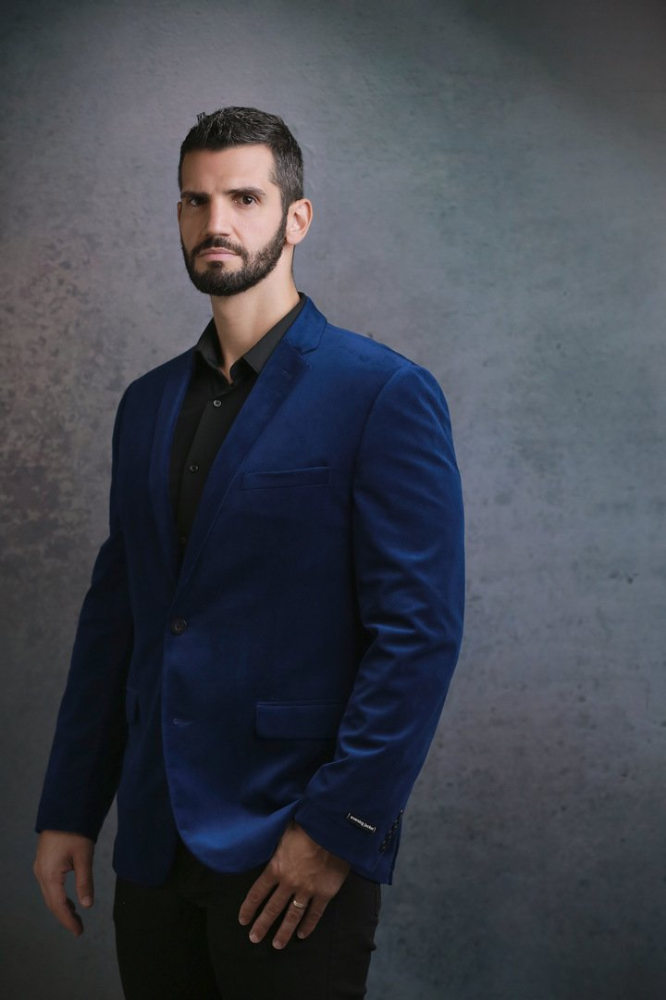

Treinador e Nutricionista Éverton Bottega
Há mais de 15 anos contribuindo com a transformação de centenas de pessoas. Referência nacional na área da saúde.

O Éverton Bottega atua há mais de 15 anos contribuindo com a transformação de centenas de pessoas, ele é referência nacional na área da saúde. Foi treinado pelo maior coach do mundo, Anthony Robbins, em Las Vegas e Londres, e pelo maior mentor de vida e finanças, T. Harv Eker, autor do livro “Os Segredos da Mente Milionária”.
É formado pelo Instituto de Formação de Treinadores Comportamentais (IFT), Instituto Brasileiro de Coach (IBC), Instituto Geronimo Theml (IGT). A formação em Programação Neurolinguística (PNL) também faz parte da sua trajetória. Somam-se, ainda, duas graduações: Educação física e Nutrição.
Ele já precisou colocar muito em prática as técnicas que aprendeu ao longo da sua história. Exemplo disso é sua carreira de ex-atleta. Éverton foi multicampeão no fisiculturismo e sentiu na pele o poder controlador da mente. Ele soube dominar seus sabotadores, para se tornar um vencedor. Já treinou vários atletas e hoje é dono de duas grandes empresas na área da saúde: Academia Unidade do Corpo e Clínica Espaço de Transformação Bottega.
Do saldo positivo da sua grande jornada como professor de pós-graduação, palestrante motivacional e amante de pessoas, nasceu o livro “NOW – Natureza da Sabedoria”. Assim, um número infinito de pessoas pode encontrar a conexão perfeita para o seu aprimoramento pessoal, físico e mental.
“Ninguém transforma ninguém, sem antes ter se transformado. Não importa o que você sabe, mas sim o que você faz com o que você sabe.”
O que sustenta o método
Mentores de referência
Treinado por Anthony Robbins, em Las Vegas e Londres, e por T. Harv Eker, autor de “Os Segredos da Mente Milionária”.
Formação sólida
Duas graduações (Educação Física e Nutrição), IFT, IBC, IGT e formação em Programação Neurolinguística (PNL).
Vivência de atleta
Ex-atleta multicampeão de fisiculturismo, professor de pós-graduação e palestrante motivacional.
Academia Unidade do Corpo
Uma das duas grandes empresas de saúde do Éverton.
Clínica Espaço de Transformação Bottega
Medicina e nutrição integrativa em Porto Alegre.
Conhecer a clínicaQuer treinar e comer com estratégia?
Conte o seu objetivo pelo WhatsApp e receba a orientação de quem transforma corpo e mente há mais de 15 anos.
Venha conhecer a estrutura do Espaço Bottega
📍 R. Schiller, 40 - Rio Branco, Porto Alegre - RS, 90430-150
Atendimento presencial com horário agendado, de segunda a sexta. Também atendemos on-line.
Agendar Atendimento